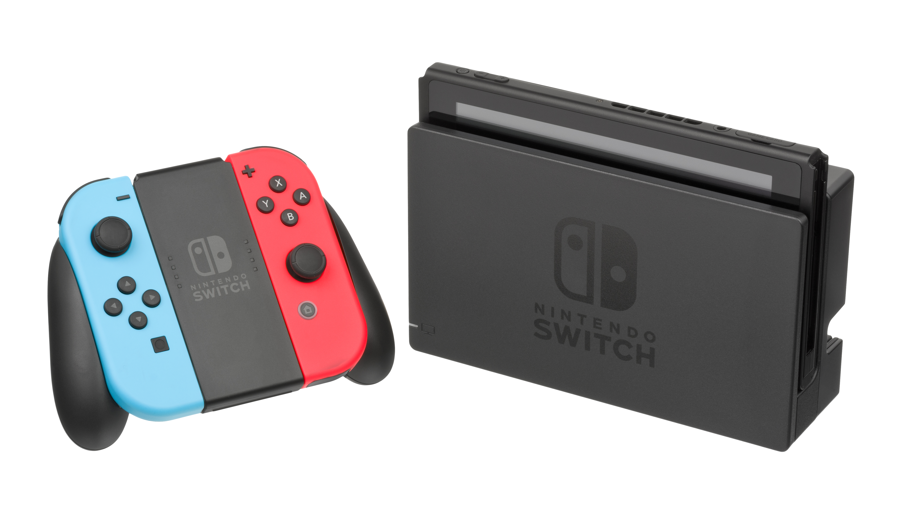

| Consola | Marca | Especificaciones | Imagen |
|---|---|---|---|
| Xbox One | Microsoft | CPU: AMD "Jaguar", 8 núcleos. GPU: 4,20 TFLOPS, AMD Radeon | |
| Playstation 4 | Sony | CPU: AMD "Jaguar", 8 núcleos. GPU: 1,84 TFLOPS, AMD Radeon | |
| Nintendo Switch | Nintendo | 102 mm x 239 mm x 13,9 mm (con los Joy-Con acoplados) Nota: 28,44 mm en la parte más gruesa, desde el extremo de las palancas análogas hasta las protuberancias de los botones ZL/ZR. |  |